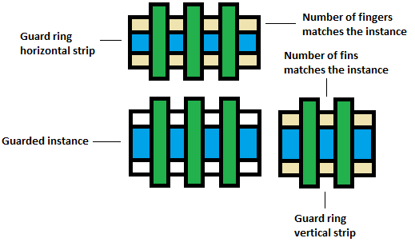
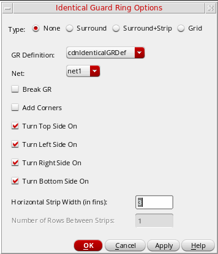

Creating Identical Guard Rings around Modgens (Virtuoso Advanced Node for Layout Only)
In addition to MPP and fluid guard rings, you can create identical guard rings in Modgens. Identical guard rings are composed of unit cells that match the guarded instances in terms of their number of fingers, number of fins, finger alignment, and other parameters.
The Create Identical Guard Ring command is available only if the PDK is configured to support identical guard rings. For more information on this capability, contact your Cadence Customer Support representative.
The following diagram depicts identical guard rings:

To create identical guard rings:
- Open a Modgen in the Modgen editor.
- Click the Guard Ring icon on the Modgen Placement toolbar.
-
Select Create Identical Guard Ring.
The Identical Guard Ring Option form appears.
 - Select a guard ring Type to define the way in which the identical guard ring surrounds the adjoining Modgen instances.
- Select a GR Definition from the list. Values are listed from the current PDK.
- Select a Net to which the guard ring must be connected.
-
Select Break GR to provide spaces for connecting guarded instances via the
Metal1layer routes. - Select Add Corners to create guard rings at all available corners around the selected instances.
- Select the required side switches—Turn Top Side On, Turn Left Side On, Turn Right Side On, and Turn Bottom Side On. These side switches turn on or off the guard ring for the specified sides.
- In Horizontal Strip Width (in fins), specify the vertical width of horizontal guard ring strips.
- In Number of Rows Between Strips, specify the number of instance rows that are required between strips of guard rings, counting from the bottom row.
- This option is available only when Type is set to either Surround+Strip or Grid.
- Click OK.
An identical guard ring is created as per your specifications.
Related Topics
Identical Guard Ring Options Form
Return to top